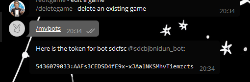
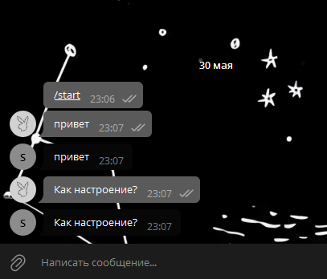

Итак, сегодня вы погрузитесь в тему разработки и пошагово создадите своего собственного телеграм-бота. В отличие от других гайдов, мы не просто добавим несколько базовых команд, а создадим полностью настраиваемого бота, в котором можно реализовать любые команды.
Прежде всего нужно определиться где вы будете писать код. Доступны несколько вариантов:
После того, как вы определились с рабочей средой, необходимо получить токен для своего бота. Для этого:
Для того, чтобы работать с ботом на Python, нужно импортировать библиотеку pyTelegramBotAPI. Для этого открываем командную строку и вписываем pip3 install pyTelegramBotAPI.
Дальше создаем “скелет” нашей программы
Сначала импортируем библиотеку telebot, которая предоставляет необходимые команды, и сохраняем ранее полученный токен в переменную TOKEN для удобства.
Создаем новый объект bot, с которым мы и будем работать.
bot.polling() отвечает за то, чтобы бот работал непрерывно и без появления ошибок
Теперь поговорим об основных элементах бота — обработчиках сообщений. это функция, которая будет выполняться при получении определённого сообщения. Для того, чтобы из обычной функции сделать обработчик сообщений для бота надо воспользоваться декоратором @bot.message_handler.
Давайте разберемся, что мы с вами написали.
filters — фильтры, определяющие, следует ли вызывать декорированную функцию для соответствующего сообщения или нет. У одного обработчика может быть несколько фильтров.
Рассмотрим основные
Первый фильтр принимает список строк, чаще всего используется аргумент content_types=['text'], который означает, что обработчик будет реагировать на все текстовые сообщения.
Второй вариант, commands, реагирует только на указанные команды. Например обработчик @bot.message_handler(commands=['start', 'help']) вызовется, только если пользователь отправит команду /start или /help.
Для обработчиков сообщений разрешено любое имя функции, поэтому function_name может принимать любое значение. Функция должна принимать не более одного аргумента, который будет сообщением, которое функция должна обработать. Аргумент message имеет все поля перечисленные здесь.
Вот и все! Это и есть весь секрет. Теперь вы научились создавать основную часть бота. Дальше остается лишь оттачивать свое мастерство и знание алгоритмов! Ну а если у кого-то еще остались вопросы, или кому-то нужно еще раз разобраться в материале, предлагаю еще раз пройтись по всем шагам и создать бота, зеркалющего наши сообщения.
Итак, как и в прошлый раз, мы начинаем с обращения к @BotFather и получаем токен для бота.
Далее снова сохраняем токен и создаем скелет нашей программы
Поскольку нам нужно, чтобы бот зеркалил абсолютно все сообщения, то используем фильтр content_types=['text'].
Теперь обращаемся к методу send_message(), 1-м аргументом передаем чат, в который надо отправить сообщение, 2-м аргументом - то, что нужно отправить, в нашем случае текст самого сообщения.
В итоге у нас получилась такая программа:
Теперь остается только запустить ее, и наш бот заработает!
